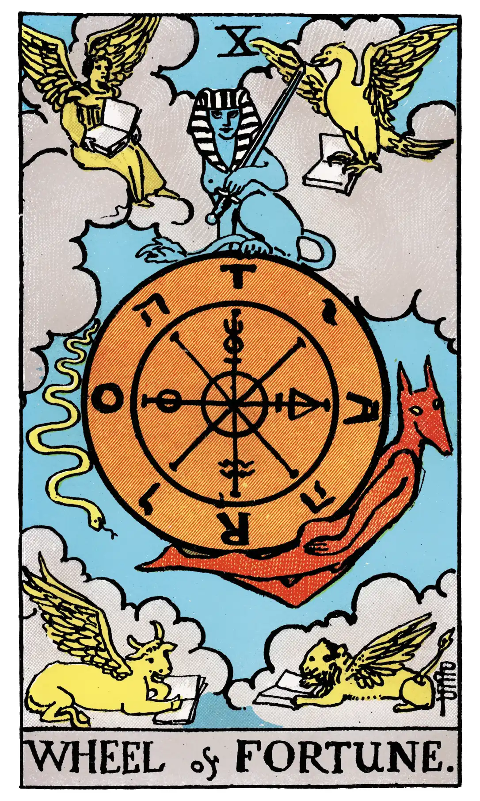

Wheel of Fortune

A.E.W.
Upright
Destiny, fortune, success, elevation, luck, felicity.
Reversed
Increase, abundance, superfluity.
S.L.M.M.
Upright
Good Fortune, Success, Unexpected Luck
Reversed
Ill-Fortune, Failure, Unexpected Ill-Luck.
Description
In this symbol I have again followed the reconstruction of Éliphas Lévi, who has furnished several variants. It is legitimate--as I have intimated--to use Egyptian symbolism when this serves our purpose, provided that no theory of origin is implied therein. I have, however, presented Typhon in his serpent form. The symbolism is, of course, not exclusively Egyptian, as the four Living Creatures of Ezekiel occupy the angles of the card, and the wheel itself follows other indications of Lévi in respect of Ezekiel's vision, as illustrative of the particular Tarot Key. With the French occultist, and in the design itself, the symbolic picture stands for the perpetual motion of a fluidic universe and for the flux of human life. The Sphinx is the equilibrium therein. The transliteration of Taro as Rota is inscribed on the wheel, counterchanged with the letters of the Divine Name--to shew that Providence is imphed through all. But this is the Divine intention within, and the similar intention without is exemplified by the four Living Creatures. Sometimes the sphinx is represented couchant on a pedestal above, which defrauds the symbolism by stultifying the essential idea of stability amidst movement.
Behind the general notion expressed in the symbol there lies the denial of chance and the fatality which is implied therein. It may be added that, from the days of Lévi onward, the occult explanations of this card are--even for occultism itself--of a singularly fatuous kind. It has been said to mean principle, fecundity, virile honour, ruling authority, etc. The findings of common fortune-telling are better than this on their own plane.
Additionally
The Wheel of Fortune. There is a current Manual of Cartomancy which has obtained a considerable vogue in England, and amidst a great scattermeal of curious things to no purpose has intersected a few serious subjects. In its last and largest edition it treats in one section of the Tarot; which--if I interpret the author rightly--it regards from beginning to end as the Wheel of Fortune, this expression being understood in my own sense. I have no objection to such an inclusive though conventional description; it obtains in all the worlds, and I wonder that it has not been adopted previously as the most appropriate name on the side of common fortune-telling. It is also the title of one of the Trumps Major--that indeed of our concern at the moment, as my sub-title shews. Of recent years this has suffered many fantastic presentations and one hypothetical reconstruction which is suggestive in its symbolism. The wheel has seven radii; in the eighteenth century the ascending and descending animals were really of nondescript character, one of them having a human head. At the summit was another monster with the body of an indeterminate beast, wings on shoulders and a crown on head. It carried two wands in its claws. These are replaced in the reconstruction by a Hermanubis rising with the wheel, a Sphinx couchant at the summit and a Typhon on the descending side. Here is another instance of an invention in support of a hypothesis; but if the latter be set aside the grouping is symbolically correct and can pass as such.